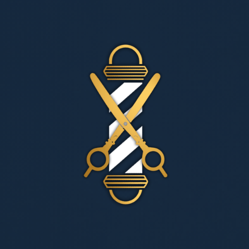
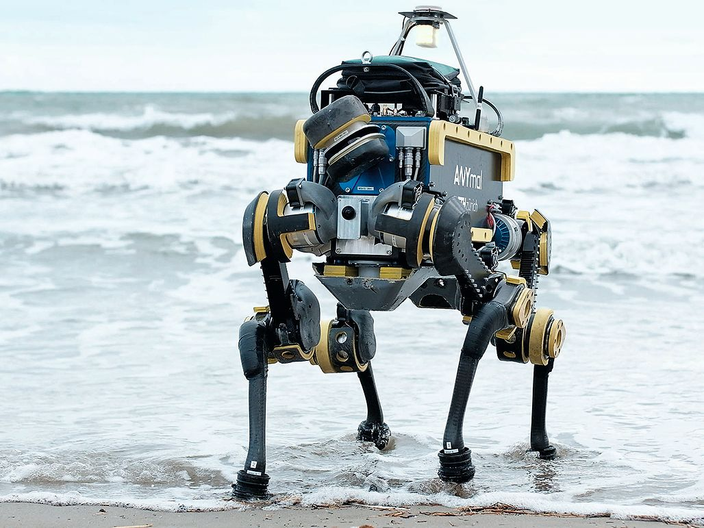

PROYECTOS DEL EVENTO
Conoce los proyectos desarrollados por los estudiantes y profesionales, enfocados en resolver problemáticas reales de nuestra sociedad a través de la tecnología.

BarberiaApp
Aplicación móvil diseñada para digitalizar la gestión de reservas, fidelización de clientes y agendamiento inteligente en barberías.

EcoRobot
Robot autónomo para la recolección inteligente y clasificación de residuos en bordes costeros.
LearnSpace
Plataforma interactiva que utiliza gamificación para enseñar programación básica a niños de educación primaria.

SecureNet
Sistema de monitorización de amenazas en tiempo real para redes e infraestructura crítica.

SmartAgro
Red de sensores IoT para la optimización automática del riego y monitoreo de cultivos.

EduVR Labs
Plataforma inmersiva de realidad virtual para simulación de experimentos de laboratorio.
Criterios de Evaluación
Los proyectos presentados en la feria serán evaluados por un jurado experto en base a los siguientes criterios:
-
Innovación y Creatividad:
Grado de originalidad de la solución propuesta y su diferenciación frente a alternativas existentes en el mercado. -
Viabilidad Técnica:
Funcionalidad real del prototipo, solidez del código y uso adecuado de las tecnologías y herramientas (stack técnico). -
Impacto y Relevancia:
Potencial del proyecto para resolver problemáticas reales y mejorar la calidad de vida de las personas o la eficiencia de los procesos. -
Defensa y Presentación:
Claridad expositiva del equipo en el stand, diseño del material de apoyo y capacidad para responder a las preguntas del jurado.
¡No te pierdas ninguna presentación!
Si te intereso alguno de los proyectos te invitamos a revisar el programa de actividades para ver los horarios de las presentaciones, para que puedas saber mas a detalle de cada proyecto y conocer a las personas detras de cada idea.
EXPLORAR EL PROGRAMA DE ACTIVIDADES